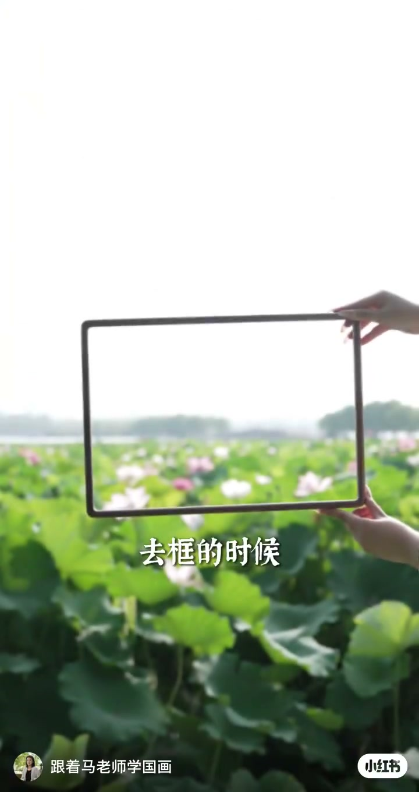
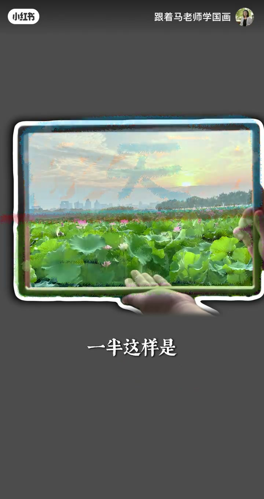
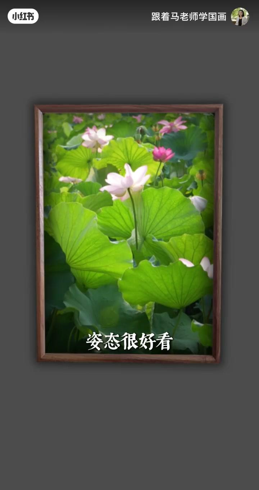
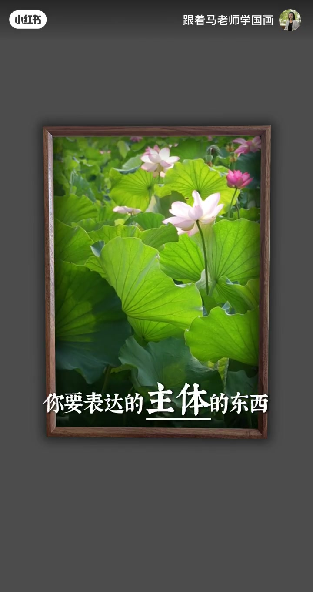
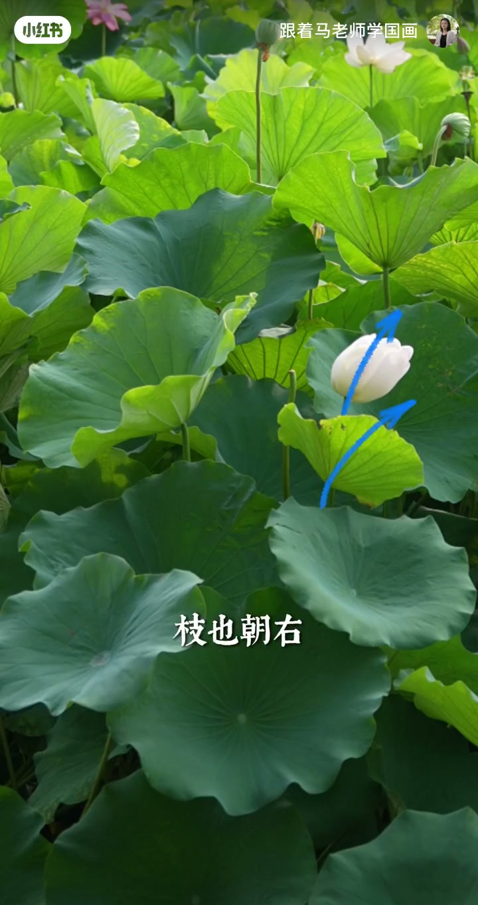
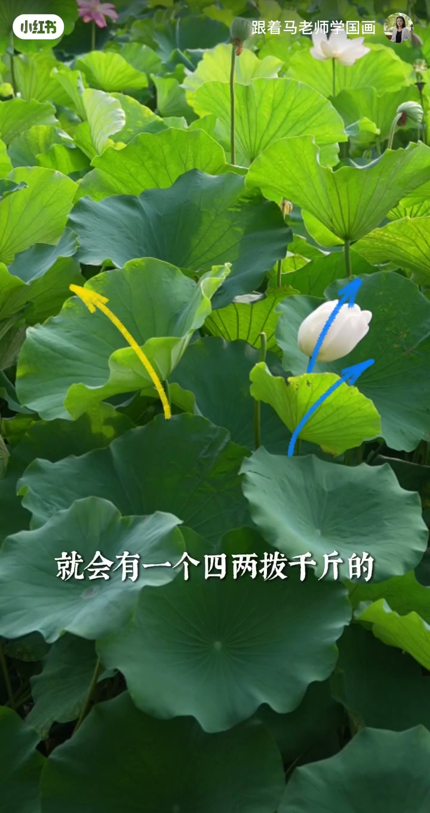
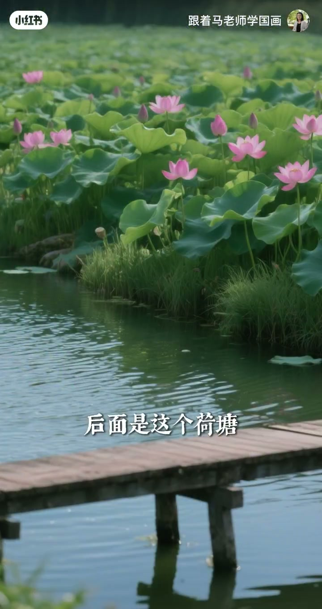
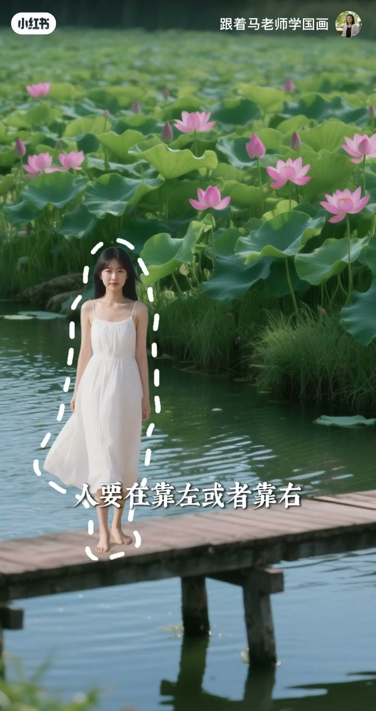

内容要点
一段 60 秒的国画写生构图课。马老师用取景框示范荷花构图的核心心法：不要让荷叶的绿色块面落在画框上下中线上——一半一半是最忌讳的；要么天留多一点，要么荷叶留多一点，就是不要对称。主体花不能放中间，要放在黄金分割点上；花头、叶子、枝全部朝右形成「势」，再用一片朝左的反叶四两拨千斤把势掰回来。最后迁移到摄影：拍人不要居中，放靠左靠右的三七出枝位。中国画最讲究在不平衡当中去求一个平衡，最忌讳四平八稳。
知识结构
取景框示范：荷叶绿块面不要落在上下中线上，一半一半不好看；天多留或荷叶多留，就是不要对称。
花不能放中间，中间太直白；表达主体要放在黄金分割点上。
花头、叶子、枝全部朝右形成统一的势；一片朝左的反叶四两拨千斤，把势往回掰。
拍照人不要居中，放靠左靠右的三七出枝位；中国画讲究在不平衡中求平衡，忌四平八稳。
构图美学三条：①块面不要居中对称（一半一半最忌讳），宁可偏天偏地；②主体放黄金分割点，不放正中间；③用方向相反的「反叶/反势」四两拨千斤制造张力。底层心法：在不平衡中求平衡，忌四平八稳。
00:00-00:16中线避让：一半一半最难看
开场直接用取景框示范。老师提醒取景时「尽量不要让荷叶形成的这个绿的块面，在你这个框的上下的中线上」——一旦绿色块面正好落在中线，构图就是一半一半，观感很差。
修正方向只有一种原则：打破对称。「你要么天留得多一点，要么荷叶留得多一点，就是不要对称。」


00:16-00:28黄金分割：主体不居中
如果觉得这朵花姿态很好看，第一原则是「这个花就不能放在中间」——中间太直白，没有任何构图经营感。
画近景时，要表达的主体要放在「黄金分割点」上。这是把西方构图比例与国画取势结合的一步。


00:28-00:40反叶取势：四两拨千斤
当下处理中，花头朝右、叶子也朝右、枝也朝右，「它这个势就都会往这边走」——视觉动力统一向右，形成明确的运动感。
最关键的一笔：「旁边有一个反叶是朝左的，就会有一个四两拨千斤的、把它又掰回去的这个感觉。」一片方向相反的小叶子，制造出张力与回旋，画面因此生动。


00:40-01:01迁移摄影：人靠三七位
把国画构图迁移到日常拍照：人站在河塘前面，「千万不要把人放到正中间，人要在靠左或者靠右、三七出枝的地方」。
总结全片要义：「中国画里面最讲究的是在不平衡当中去求一个平衡，它最忌讳的是四平八稳。」


完整转录（30段）
以下文本由 Whisper medium 模型自动转录，可能存在少量识别误差，已尽可能修正。
拿这个取景框去框的时候
你要注意
你尽量不要让荷叶形成的这个绿的块面
在你这个框的上下的中线上
那它就刚好一半一半这样是不好看的
你要么天留得多一点
要么荷叶留得多一点
就是不要对称
比如说我就觉得这个花姿态很好看
那么首先这个花就不能放在中间
中间就太直白了
只是画一个近景的话
你要表达的这个主体的东西
要在黄金分割点上
当下处理当中
花头朝右 叶子也朝右 枝也朝右
它这个势就都会往这边走
但很重要的是
旁边有一个反叶是朝左的
就会有一个四两钵千斤的
把它又掰回去的这个感觉
比如说大家自己去拍照的时候
后面是这个河塘
人站在前面
千万不要把人放到正中间
人要在靠左或者靠右
三七出支的地方
所以中国话里面最讲究的是一个
在不平衡当中去求一个平衡
它最忌讳的是四平八稳